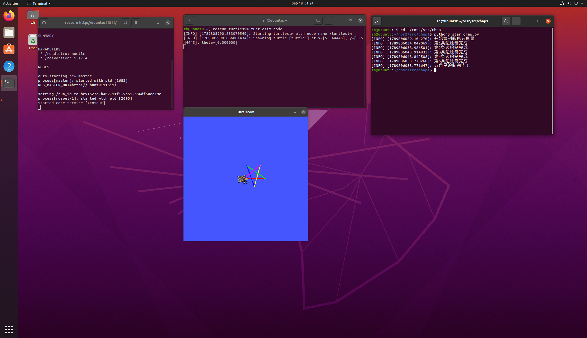

小海龟绘制彩色五角星实验报告
一、实验目的
- 熟悉ROS Noetic环境，掌握ROS话题通信机制，使用发布器向
/turtle1/cmd_vel话题发布速度指令，控制海龟运动。 - 掌握ROS服务调用，使用
/turtle1/set_pen服务动态修改画笔RGB颜色，实现彩色绘图。 - 理解时序控制逻辑，通过定时方式控制海龟直行距离与旋转角度，完成五角星轨迹绘制。
- 学会使用
rosnode、rostopic、rosservice工具查看节点、话题、服务，验证ROS通信。
1.2 实验环境
| 项目 | 配置 |
|---|---|
| 操作系统 | Ubuntu 20.04（VMware虚拟机） |
| ROS发行版 | ROS Noetic |
| 仿真器 | turtlesim |
| 编程语言 | Python 3（rospy） |
| 功能包 | turtle_motion |
功能包目录结构：
turtle_motion/
├── package.xml # 包清单，声明 rospy、geometry_msgs 和 turtlesim 依赖
├── CMakeLists.txt # 编译配置，安装 Python 脚本
└── scripts/
└── star_draw.py # 主程序：控制小海龟绘制彩色五角星二、核心控制原理与算法解析
2.1 ROS话题通信与服务调用
turtlesim仿真器启动后，海龟订阅/turtle1/cmd_vel话题，该话题消息类型为Twist，包含线速度linear与角速度angular。自定义节点作为发布者，向该话题发送速度指令，控制海龟前进、转向。
本实验额外调用turtlesim内置服务/turtle1/set_pen，服务参数：r,g,b,width,off。r/g/b为0~255的RGB颜色值，width设置画笔粗细，off=0开启画笔。在绘制每一条边前调用该服务切换颜色，实现五角星五条边色彩不同。
2.2 五角星几何原理
五角星外角为144°，程序循环执行5次：设置画笔颜色 → 直线前进 → 原地逆时针旋转144°。循环结束即可闭合五角星图形。
本程序采用定时控制策略：根据 时间 = 距离 / 速度 计算直行持续时间；根据 时间 = 角度 / 角速度 计算旋转持续时间，到达设定时间就停止运动。
2.3 算法流程
- 初始化绘图节点
draw_star_node - 等待
/turtle1/set_pen画笔服务就绪 - 创建速度消息发布器，设置发布频率50Hz
- 循环5次：
- 调用SetPen设置本条边RGB颜色
- 发布线速度，海龟直行，计时结束后停止前进
- 短暂延时稳定海龟
- 发布角速度，海龟原地旋转144°，计时结束停止旋转
- 短暂延时
- 循环结束，打印绘制完成信息
三、完整源码展示
3.1 主程序 scripts/star_draw.py
#!/usr/bin/env python3
# -*- coding: utf-8 -*-
# 小海龟绘制彩色五角星 ROS Noetic
import math
import rospy
from geometry_msgs.msg import Twist
from turtlesim.srv import SetPen
# 5种颜色，5条边
COLORS = [(255,0,0),(0,255,0),(0,0,255),(255,255,0),(255,0,255)]
def main():
rospy.init_node('draw_star_node')
# 等待画笔服务
rospy.wait_for_service('/turtle1/set_pen')
set_pen = rospy.ServiceProxy('/turtle1/set_pen', SetPen)
# 速度发布器
pub = rospy.Publisher('/turtle1/cmd_vel', Twist, queue_size=10)
rate = rospy.Rate(50)
twist = Twist()
# 参数
line_len = 2.0
turn_angle_rad = 144 * math.pi / 180
lin_speed = 1.0
ang_speed = 1.0
rospy.loginfo("开始绘制彩色五角星")
for i in range(5):
# 设置当前边颜色
r,g,b = COLORS[i]
set_pen(r,g,b,3,0)
# 前进画边
twist.linear.x = lin_speed
twist.angular.z = 0.0
end_time = rospy.Time.now() + rospy.Duration(line_len / lin_speed)
while rospy.Time.now() < end_time and not rospy.is_shutdown():
pub.publish(twist)
rate.sleep()
# 停下
twist.linear.x = 0.0
pub.publish(twist)
rospy.sleep(0.2)
# 转弯144度
twist.angular.z = ang_speed
end_time = rospy.Time.now() + rospy.Duration(turn_angle_rad / ang_speed)
while rospy.Time.now() < end_time and not rospy.is_shutdown():
pub.publish(twist)
rate.sleep()
# 停止转弯
twist.angular.z = 0.0
pub.publish(twist)
rospy.sleep(0.2)
rospy.loginfo(f"第{i+1}条边绘制完成")
rospy.loginfo("五角星绘制完毕！")
if __name__ == '__main__':
main()3.2 构建文件 CMakeLists.txt
cmake_minimum_required(VERSION 3.0.2)
project(turtle_motion)
find_package(catkin REQUIRED COMPONENTS
rospy
geometry_msgs
turtlesim
)
catkin_package()
catkin_install_python(PROGRAMS
scripts/star_draw.py
DESTINATION ${CATKIN_PACKAGE_BIN_DESTINATION}
)3.3 包清单 package.xml
<?xml version="1.0"?>
<!-- turtle_motion 功能包：小海龟自主绘制彩色五角星轨迹 -->
<package format="2">
<name>turtle_motion</name>
<version>0.0.0</version>
<description>turtle_motion: 小海龟自主绘制彩色五角星轨迹功能包</description>
<maintainer email="your_email@example.com">your_name</maintainer>
<license>TODO</license>
<buildtool_depend>catkin</buildtool_depend>
<build_depend>rospy</build_depend>
<build_depend>geometry_msgs</build_depend>
<build_depend>turtlesim</build_depend>
<exec_depend>rospy</exec_depend>
<exec_depend>geometry_msgs</exec_depend>
<exec_depend>turtlesim</exec_depend>
<export>
</export>
</package>四、运行与验证
4.1 编译功能包
将turtle_motion功能包放入Catkin工作空间的src目录，终端依次执行：
chmod +x ~/catkin_ws/src/turtle_motion/scripts/star_draw.py
cd ~/catkin_ws
catkin_make
source devel/setup.bash4.2 启动节点
打开三个独立终端 终端1：启动ROS核心
roscorerosrun turtlesim turtlesim_nodesource ~/catkin_ws/devel/setup.bash
rosrun turtle_motion star_draw.py
4.3 话题和节点验证
保持程序运行状态，新开终端执行以下命令验证ROS通信。 1. 查看当前运行节点
rosnode list/draw_star_node
/rosout
/turtlesimdraw_star_node为本实验自定义绘图节点，turtlesim是海龟仿真节点。
-
查看全部话题
可看到核心话题：rostopic list/turtle1/cmd_vel、/turtle1/pose。 -
实时打印速度话题消息
程序运行时交替输出两种消息：rostopic echo /turtle1/cmd_vel
直行状态：
linear:
x: 1.0
y: 0.0
z: 0.0
angular:
x: 0.0
y: 0.0
z: 0.0
---转弯状态：
linear:
x: 0.0
y: 0.0
z: 0.0
angular:
x: 0.0
y: 0.0
z: 1.0
---说明：直行时只有x方向线速度；转弯时只有z方向角速度。
- 查看可用服务
能看到rosservice list/turtle1/set_pen画笔服务。
程序在绘制每条边前调用该服务修改画笔RGB颜色。rosservice info /turtle1/set_pen
五、参数调整
修改star_draw.py内参数，可调整图形效果：
| 参数 | 作用 |
|---|---|
line_len = 2.0 |
五角星每条边的长度，数值越大图形越大 |
lin_speed = 1.0 |
海龟前进速度 |
ang_speed = 1.0 |
海龟旋转角速度 |
COLORS数组 |
修改五条边的RGB颜色 |
注意：line_len不能设置过大，海龟碰到窗口边界会卡住，影响绘图。
六、实验总结
本次实验结合ROS话题通信与ROS服务调用，控制turtlesim小海龟绘制彩色五角星。
- 通过
/turtle1/cmd_vel话题发布Twist速度消息，实现海龟前进与原地旋转。 - 调用
/turtle1/set_pen服务动态修改画笔RGB色彩，实现每条边不同颜色，是本实验的特色。 - 采用定时控制策略，循环5次完成五角星轨迹绘制。
- 使用
rosnode、rostopic、rosservice工具，验证节点、话题、服务通信正常。
实验发现定时方案会积累微小误差，图形末端存在轻微闭合偏差，后续可以使用pose订阅的闭环方式优化。